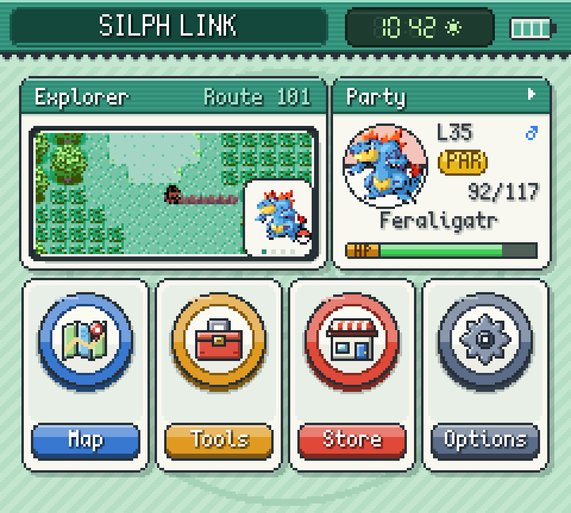
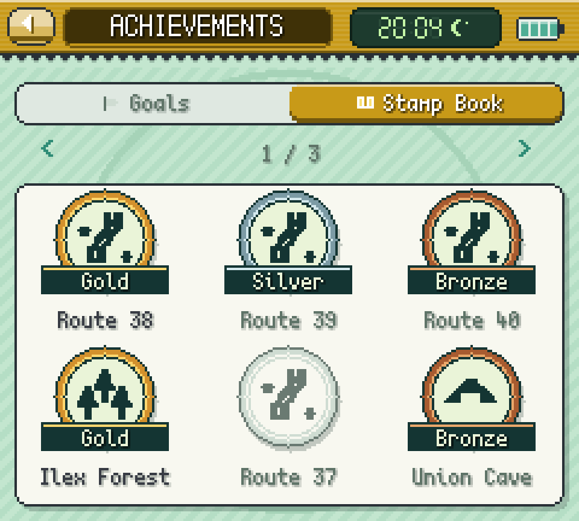
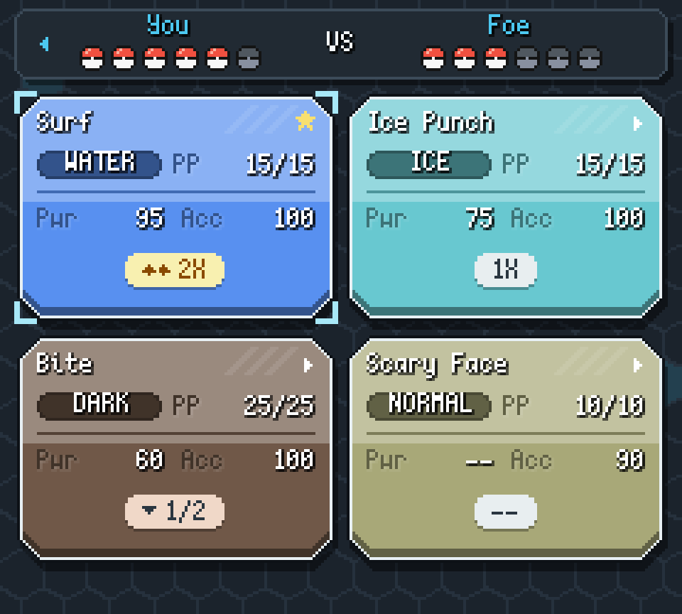
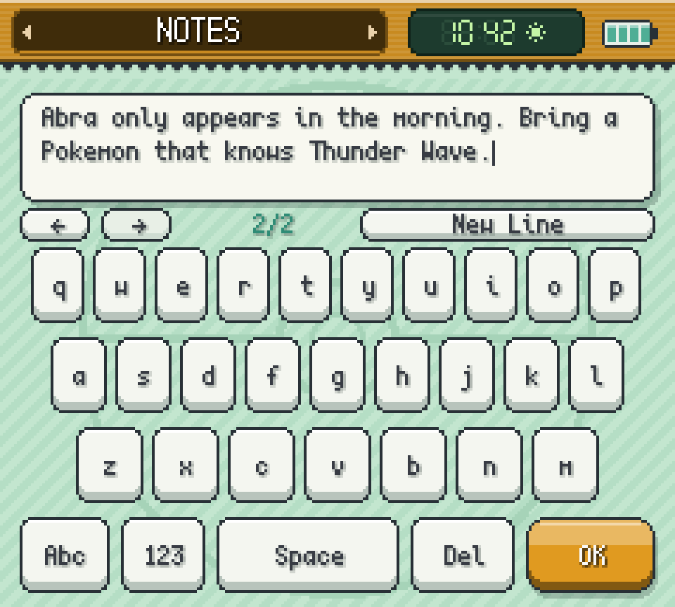

Kanto Gear
Your adventure. Reconnected.

Tap the screen to look around.
A second screen for Pokémon Red through Emerald. Your map, team, battle controls, notes and progress sit on Gear while the game keeps running.
A mod for Gen1Recomp on Android, Windows and Linux, with an optional phone display.
Version 4.4.0 for Gen1Recomp 0.3.93 or newer
Set up in three steps
Step 1
Install Gen1Recomp 0.3.93 or newer and import your own ROM.
Step 2
Download the latest ZIP and import it from Recomp's Mods menu. The Mod Index listing is temporarily unavailable while its API 3 scanner is updated; see the compatibility fix.
Step 3
Enable the mod, start your game and open Gear's Options to pick a layout, look, language and how much it reveals.
One ZIP for Android, Windows and Linux. It contains no ROM and no save.
Apps for the second screen
Build your own Home from apps and widgets. Long-press to edit; Silph Store adds the optional ones. Other Recomp mods can bring apps too.
Silph Store16 apps
- ExplorerLocal map with encounters, trainers, items and hidden finds, in three zoom levels.
- MapBrowse the region, inspect places and pick a Fly destination.
- PartyHP, status, experience, moves and held items, with full summaries.
- BagEvery pocket, with Use, Give and Toss where the game allows them.
- PokédexEntries, evolution conditions and where to find each species.
- StampsA checklist for every location: trainers, items, hidden finds, Pokémon.
- NotesText, checklists and colored drawings, per location if you like.
- Day-CareLevels, fees and moves at pickup; eggs and compatibility in Gen 2 and 3.
- CalendarWeekly visitors, rematches, tides, berries and VS Seeker charge.
- PokégearThe original device from Gold, Silver and Crystal, on the touch screen.
- PokéNavThe original device from Ruby, Sapphire and Emerald, below the game.
- Field KitRods, Bicycle, Item Radar and field moves, usable ones first.
- Trainer CardBadges, play time and records, with your card rank where available.
- Step CounterSteps, milestones and a session counter you can reset.
- Silph ConnectSee who else is online, with their edition, location and status.
- Silph StoreManage your Gear apps and find new ones for Home.
Decide how much Gear tells you
Gear can stay as strict as the original game or show you everything. Change it any time under Options, Discovery.
Stamps turn each place into a checklist. An area turns gold once its required goals are done and you have been there.

Battles, your way
Outside battles, the game screen stays as it was. In battle, choose how much moves down to Gear.

Game screen
The battle scene and HP bars.
Gear screen
Menus, moves, party, Bag and battle text, with D-pad focus down here.
Touch feedback only plays when a control can act. Empty PP and unavailable moves are marked.
One screen or two
No dual-screen handheld needed. Pick the layout that fits what you play on.
Gear in its own window. Made for dual-screen handhelds, a second desktop window or another monitor.
Your phone as the second screen
Choose Phone / Browser in Gear's Options, scan the QR code and tap Connect. Your phone shows Gear, and can add game controls you can move, resize or set up for one hand.
It runs over your local Wi-Fi with no account and no outside service. The connection is not encrypted, so use a network you trust. One browser at a time; pairing codes work once and expire after five minutes.
Notes

Notes are kept per playthrough. QWERTY and QWERTZ included.
Questions
Is Kanto Gear an emulator or a phone app?
Neither. It is a Lua mod for Gen1Recomp. Recomp runs your game; Gear adds the companion screen. Phone mode only displays Gear on another device.
Do I need a dual-screen handheld?
No. Fullscreen Swap and Combined work on one screen. Separate suits dual-screen handhelds, desktop windows and extra monitors.
Which languages does Gear speak?
English, German, Spanish, French, Japanese and Italian, under Options, Appearance. Game text still comes from your game or a translation mod.
Can other mods add apps?
Yes. Installed Recomp mods can register apps that show up in Silph Store. See the store module interface.
My AYANEO Pocket DS misses a screen or zooms the game. What helps?
A Pocket DS user confirmed this workaround: open Gallery on the bottom screen, then launch Gen1Recomp on the top screen. Opening Gallery below also helped while Recomp was already running above. See the affected setup and report.